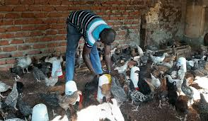

GOP Poultry Farming
Poultry contributes to improved human nutrition and food security by being a leading source of high-quality protein in the form of eggs and meat. It acts as a key supplement to revenue from crops and other livestock enterprises, thus avoiding over-dependency on traditional commodities with inconsistent prices.
Poultry contributes to improved human nutrition and food security by being a leading source of high-quality protein in the form of eggs and meat. It acts as a key supplement to revenue from crops and other livestock enterprises, thus avoiding over-dependency on traditional commodities with inconsistent prices.
It has a high potential to generate foreign exchange earnings through the export of poultry products to neighboring countries. Poultry is highly prized in many social-cultural functions such as dowry and festivities. The poultry industry in Uganda is relatively new.
Its major problem is therefore associated with its further expansion, though care must be taken to avoid overproduction.
